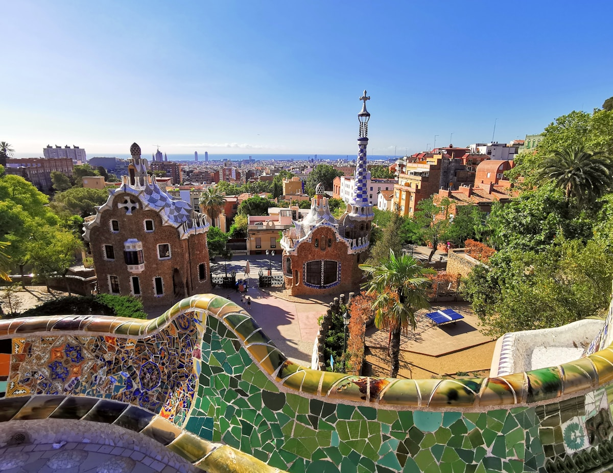
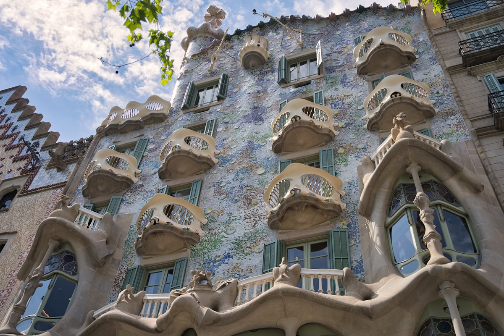
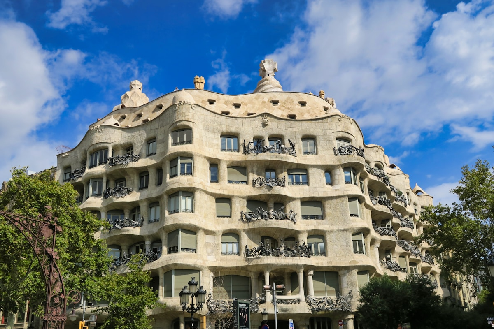
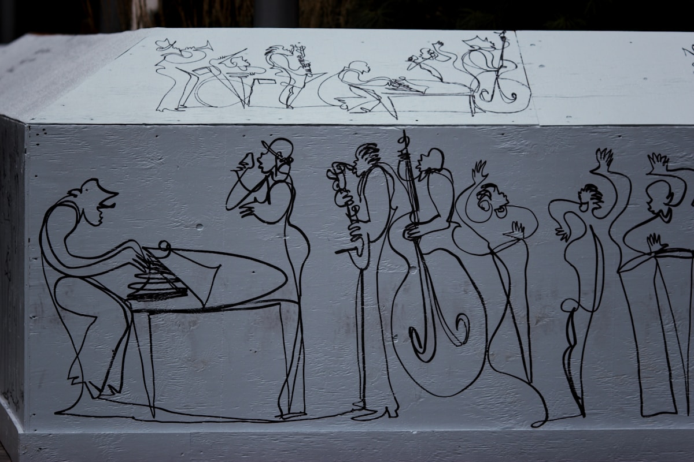
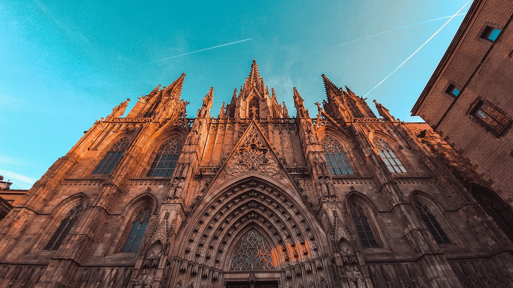
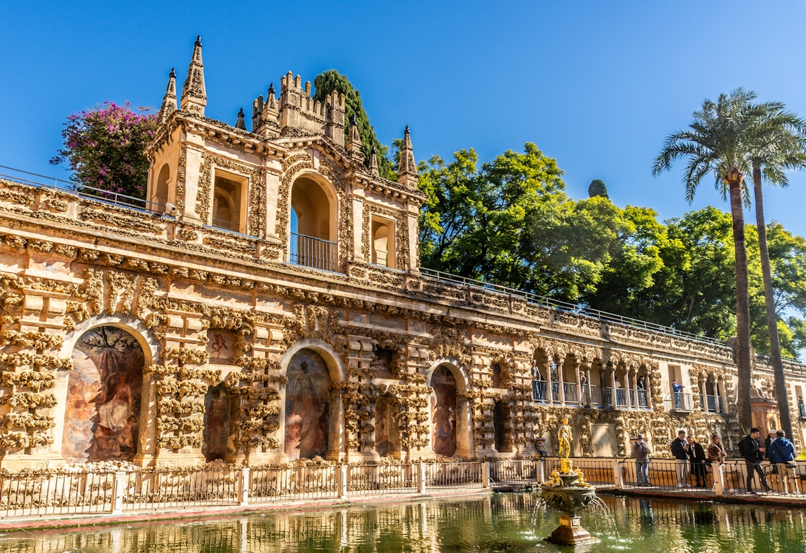
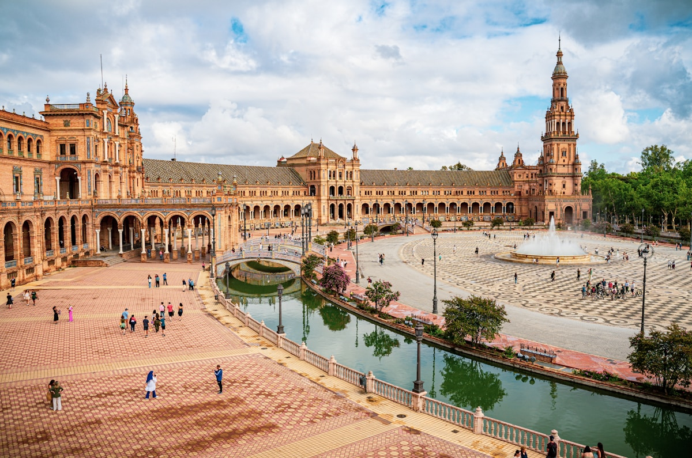
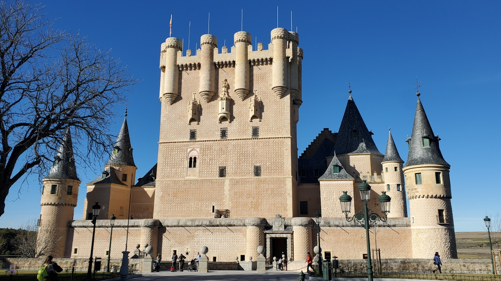
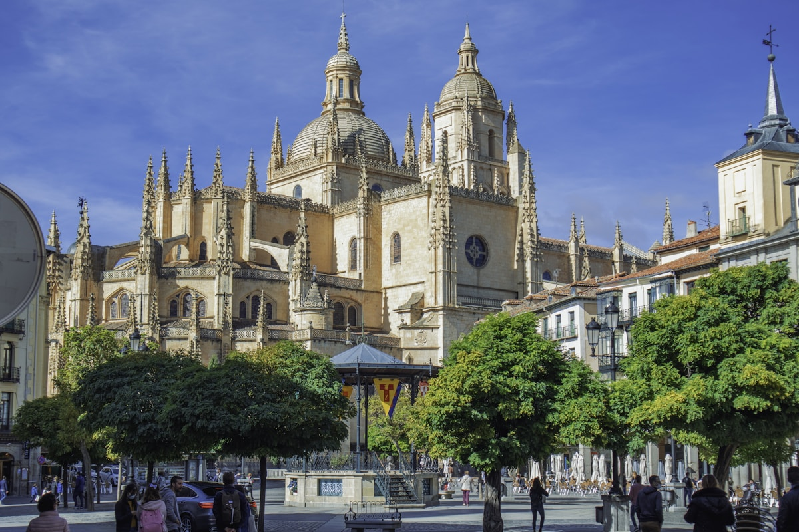

旅行贴士
城市分布图
节日月份表
城市交通
西班牙城际交通选择丰富，城市间往来便捷。机票价格浮动大，最好提前规划买票；火车价格也会浮动，需提前购买；大巴价格固定、班次多，可提前1周买。
| 路线 | 🚄火车 | ✈️飞机 | 🚌大巴 | 推荐 |
|---|---|---|---|---|
| 马德里→巴塞罗那 | 2.5h·💶40-90 | 1.5h·💶30-80 | 7.5h·💶30-45 | 火车 |
| 马德里→塞维利亚 | 2.5h·💶35-80 | 1h·💶35-90 | 6h·💶20-30 | 火车 |
| 马德里→格拉纳达 | 4h·💶40-70 | 1h·💶35-100 | 5h·💶20-30 | 火车 |
| 马德里→托莱多 | 0.5h·💶12-15 | 无直飞 | 1h·💶6-10 | 火车 |
| 马德里→塞哥维亚 | 0.5h·💶12-15 | 无直飞 | 1.5h·💶8-10 | 火车 |
| 巴塞罗那→塞维利亚 | 5.5h·💶50-90 | 1.5h·💶30-70 | 14-16h·💶70-110 | 飞机 |
| 塞维利亚→格拉纳达 | 4.5h(需转) | 无直飞 | 3h·💶15-25 | 大巴 |
| 塞维利亚→科尔多瓦 | 0.8h·💶15-30 | 无直飞 | 2h·💶10-15 | 火车 |
马德里 Madrid
The Heart of Spain
西班牙首都，欧洲海拔最高的首都城市。三大世界级博物馆云集于此，皇宫与广场交相辉映，夜生活热烈，是感受西班牙现代活力与皇室历史的最佳起点。

马德里皇宫
Palacio Real de Madrid
欧洲规模最大的皇宫之一，18世纪波旁王朝巴洛克杰作，拥有3418个房间。腓力五世下令重建，外立面多利克与爱奥尼亚柱式层叠，王座厅天鹅绒与镀金令人叹为观止。皇家军械库珍藏中世纪武器，皇家药房保存17世纪药瓶。宫前东方广场与阿尔穆德纳大教堂相呼应，构成马德里最庄重的历史轴线。
国事活动期间临时关闭，出发前官网确认；内部多处不可拍照；强烈建议租借含中文的官方语音导览器

普拉多国家博物馆
Museo Nacional del Prado
世界三大博物馆之一，西班牙艺术的最高殿堂。馆藏逾35000件，委拉斯开兹《宫娥》、戈雅《1808年5月3日》与《黑色绘画》系列、博斯《人间乐园》等旷世名作云集于此。建筑本身是18世纪新古典主义杰作。
大包须寄存入口处；馆内全程禁止拍照；免费时段排队时间较长；强烈建议租中文语音导览器

索菲亚王后艺术中心
Museo Reina Sofía
西班牙现代与当代艺术最重要的殿堂，毕加索《格尔尼卡》是镇馆之宝。这幅11米宽的反战巨作令无数观者驻足沉默。达利、米罗的大型装置作品同样必看。由旧圣卡洛斯医院改建，现代玻璃电梯与18世纪砖石外墙形成强烈对比。
《格尔尼卡》禁止拍照；与普拉多步行约5分钟，可安排同日参观；建议留2小时以上

丽池公园
Parque del Retiro
UNESCO世界遗产，马德里的城市绿肺，曾是波旁王室的私人园林。130公顷，15000株植物，人工湖可租划船，水晶宫举办免费当代艺术展，阿方索十二世纪念碑是最佳拍摄点。每周末有街头艺人，是感受马德里人日常生活节奏的最佳窗口。
水晶宫免费入内，可查询展期；清晨和傍晚光线最美；避免正午阳光暴晒
巴塞罗那 Barcelona
Gaudi's Masterpiece
加泰罗尼亚首府，高迪建筑奇迹的聚集地。地中海阳光、哥特老城、感恩大道与世界级美食汇聚一城，融合了南欧浪漫与现代创意，魅力无可复制。

圣家堂
Sagrada Família
UNESCO世界遗产，高迪倾注43年心血的未竟杰作，全球唯一尚未完工便列为世遗的建筑。诞生立面的石雕精细入微，受难立面简洁震撼，内部彩色玻璃将阳光化为魔幻光海，树形石柱支撑起轻盈的穹顶。预计2026年高迪逝世百年之际完工，届时将成为世界最高教堂。
旺季至少提前2周购票，含塔楼票更早售罄；内部为宗教场所请保持肃静；导览器支持中文

桂尔公园
Park Güell
高迪与友人桂尔共同打造的彩色马赛克王国，UNESCO世界遗产。希腊神庙式广场的镶嵌彩椅是最具代表性的打卡地，龙形喷泉守护着台阶入口，百柱厅的多立克石柱气势磅礴。公园最高处是俯瞰巴塞罗那全城与地中海的绝佳观景台。
必须提前官网分时购票，现场常售罄；建议开园后第一场人少；需步行上坡，穿舒适的鞋

巴特罗之家
Casa Batlló
高迪的海洋梦境，被誉为"世界最美建筑"之一。外立面覆盖蓝绿色瓷砖碎片，在阳光下如鱼鳞般闪烁；阳台形似骨骼，屋顶龙脊蜿蜒。内部展示高迪将自然形态融入建筑的天才——没有直角，所有空间流动如海浪。夜间灯光版体验尤为震撼。
AR导览体验生动，强烈推荐；夜间版灯光效果震撼；与米拉之家同在感恩大道，可串联参观

米拉之家
Casa Milà (La Pedrera)
高迪最后的民用建筑作品，别名"石头矿场"（La Pedrera）。没有一条直线，外立面的石灰岩波浪与铸铁阳台如同海浪翻腾。屋顶露台是整栋建筑的高潮——造型各异的烟囱"武士"矗立其中，可俯瞰整个扩展区街景。顶层展示高迪建筑原理，阁楼的抛物线拱廊精美绝伦。
屋顶露台是最大亮点，雨天可能关闭；语音导览支持中文；与巴特罗之家步行约5分钟

毕加索博物馆
Museu Picasso
全球最重要的毕加索博物馆之一，位于巴塞罗那老城哥特区。五座13至15世纪中世纪贵族宫殿串联而成，庭院幽静，建筑本身已是珍宝。馆藏4000余件，以毕加索早年习作和《宫娥》系列临摹55幅为核心，展示了天才艺术家从神童到革命者的成长轨迹。
每月第一个周日免费需提前线上预约；周四17:00-20:00优惠场；位于哥特区，步行可达

巴塞罗那主教座堂
Catedral de Barcelona
哥特区的精神核心，一座从13世纪延续修建至20世纪初的哥特式大教堂，花了近600年完成。中庭的白鹅庭院（13只白鹅象征圣埃乌拉利亚殉道时的年龄）是全欧洲最独特的教堂景观之一。屋顶平台可眺望巴塞罗那全城，地下室珍藏守护圣人圣埃乌拉利亚的石棺。
官网分时购票；Visita Catedral含屋顶和音频导览体验；夜游限额需提前预订；弥撒期间不开放游览（周日上午）
格拉纳达 Granada
Where East Meets West
伊斯兰文明在西班牙留下的最后印记。阿尔罕布拉宫俯瞰全城，阿尔拜辛区白墙窄巷里飘出弗拉门戈旋律，内华达山雪峰与摩尔宫殿共存，东西方文明在此深情交汇。

阿尔罕布拉宫
La Alhambra
UNESCO世界遗产，伊斯兰建筑在西方的巅峰之作，西班牙参观人数最多的景点。纳斯里德宫的几何灰泥雕花精细至令人窒息，狮子庭院的12只大理石雄狮守护着最私密的宫廷空间，赫内拉利费花园的流水系统融合了伊斯兰园林艺术的精髓。赭红色城墙在内华达山雪峰的映衬下构成格拉纳达最永恒的天际线。
纳斯里德宫分时入场，错过预定时段不得入内；门票类型较多，全宫殿参观买 Alhambra General；夜间场另需单独购票

格拉纳达主教座堂
Catedral de Granada
16世纪西班牙文艺复兴最重要的建筑成就之一，建造历时182年。正立面由阿隆索·卡诺设计，在恢弘的哥特结构内填入了文艺复兴式圆柱和古典装饰，这种"罗马式"风格在伊比利亚半岛独树一帜。毗邻的王室礼拜堂安葬着天主教双王伊莎贝拉与斐迪南，是收复失地运动的精神终点。
票多可现场购票；与王室礼拜堂联票；内部禁止拍照；步行可达阿尔拜辛老城

圣尼古拉斯观景台
Mirador de San Nicolás
格拉纳达最经典的观景点，阿尔拜辛区白色山丘上的传奇广场。站在这里，阿尔罕布拉宫全貌在眼前铺展——红色城墙、纳斯里德宫塔楼、远处内华达山脉雪峰尽收眼底。日落时夕阳将宫殿染成金红色，广场边街头音乐人弗拉门戈旋律随风飘来，被无数旅人誉为"世界最美日落之一"。
日落前1小时到达占位；上山有两条路，建议从阿尔拜辛区步行穿越白色老街上山；小心扒手

圣胡安迪奥斯大教堂
Basílica de San Juan de Dios
格拉纳达最华丽的巴洛克教堂，18世纪建成。主祭坛是西班牙巴洛克装饰艺术的极致——镀金雕塑层层叠叠，圣胡安迪奥斯圣徒的遗骨供奉其中，银光与金光交相辉映，奢华程度令初见者目瞪口呆。与格拉纳达大教堂的宏伟外观相比，这里展示的是伊比利亚半岛内部装饰的不同美学。
有官网语音讲解；注意午休关门时段（约14:00-16:00）；教堂不大，参观约30分钟
塞维利亚 Sevilla
Flamenco's Soul
弗拉门戈的发源地，安达卢西亚的热情心脏。圣周游行震撼人心，四月春会欢腾整城，希拉尔达塔与王宫展现着摩尔与基督两种文明共同书写的辉煌历史。

塞维利亚大教堂与希拉尔达塔
Catedral de Sevilla y La Giralda
UNESCO世界遗产，全球最大的哥特式教堂，也是世界第三大教堂。1401年在旧清真寺的基础上开始修建，主祭坛镀金雕刻高达28米。哥伦布之墓安放于此，四位国王雕像托举着他的棺柩。希拉尔达塔原为清真寺宣礼塔，34段坡道无台阶设计供骑马登顶，如今俯瞰塞维利亚全城，是安达卢西亚最上镜的天际线。
线上购票省€1且可跳过长队；周日免费场限额极少需排队；登塔后可继续参观教堂本身

塞维利亚王宫
Real Alcázar de Sevilla
UNESCO世界遗产，欧洲现存最古老的仍在使用的皇家宫殿。摩尔人城堡基础上叠加了穆德哈尔、哥特、文艺复兴多种风格，是西班牙文化融合的最佳建筑缩影。少女庭院柱廊倒影、大使厅镶嵌彩砖穹顶令人叹为观止。英剧《权力的游戏》多恩王国场景在此取景。皇家花园层层叠叠，迷宫与喷泉是绝佳避暑去处。
旺季提前至少1周线上购票；官方App有免费中文语音导览；《权力的游戏》拍摄地，建议告知同行者

西班牙广场
Plaza de España
塞维利亚最宏伟的城市舞台，1929年伊比利亚-美洲博览会的主展馆。半圆形宫殿长500米，赭红色砖砌外墙配以蓝白彩砖，环绕广场的运河可租划船。广场周边58个壁龛分别用彩色马赛克展示西班牙各省历史故事，是当地新婚照最热门拍摄地。《星球大战》与《阿拉伯的劳伦斯》曾在此取景。
早晨和黄昏光线最美，中午阳光强烈；逢弗拉明戈表演可免费观看，时间不定
科尔多瓦 Córdoba
Bridge of Civilizations
中世纪伊斯兰世界最伟大的城市之一。大清真寺-主教座堂是建筑史上绝无仅有的奇观，每逢5月庭院节，全城私家庭院竞相盛开鲜花，令人叹为观止。

科尔多瓦大清真寺-主教座堂
Mezquita-Catedral de Córdoba
UNESCO世界遗产，人类建筑史上最震撼的宗教融合奇观。785年摩尔哈里发开始修建，历经四代扩建，856根双层红白拱柱在林间般的空间中绵延无尽。16世纪基督教君主强行在清真寺正中建起哥特式大教堂——两种截然不同的宗教美学就此永久共存于同一屋顶之下，形成全球唯一的建筑奇观。
官方语音导览内容详尽，强烈推荐；早上开门第一场光线透过彩窗照入柱廊最美；弥撒免费时段仅可进入约60%区域
托莱多 Toledo
Three Cultures in Stone
塔霍河三面环抱的中世纪古城，基督、伊斯兰与犹太三大文明曾在此和平共居千年。石板街巷保存完好，从马德里乘高铁仅30分钟，是最值得半日出行的古城。

托莱多大教堂
Catedral Primada de Toledo
西班牙天主教最高圣殿，伊比利亚半岛最重要的哥特式教堂。1226年在旧清真寺基址上开始兴建，耗时三百年完工。28道彩色玻璃窗，750年历史的透明祭坛（Transparente）是巴洛克装饰艺术的极致，格列柯、戈雅等大师的原作悬挂于此。教堂珍宝室收藏10吨重的纯金圣体光，是全球最壮观的宗教珍宝之一。
中午光线透过"透明祭坛"穹顶约11:00-12:00最为壮观；内部禁止拍照；语音导览含中文推荐购买
塞哥维亚 Segovia
Roman Legacy
卡斯蒂利亚高原上的童话小城，拥有迪士尼城堡原型与两千年罗马渡槽。古城小巧精致，烤乳猪是当地名物，从马德里出发仅需半小时，适合轻松一日游。

塞哥维亚古罗马渡槽
Acueducto de Segovia
两千年不倒的罗马工程奇迹，UNESCO世界遗产。渡槽建于公元1世纪，由20400块花岗岩堆砌而成——没有使用任何砂浆或粘合剂，纯靠石块之间的重力与精密切割咬合。双层拱廊最高处达28米，167道拱门横跨阿索格霍广场，从城市中心直入山间，全长约15公里。它见证了罗马帝国在伊比利亚半岛的辉煌，至今仍是塞哥维亚最骄傲的标志。黄昏时分花岗岩被夕阳染成金色。
日出和日落时分光线最美，从台阶高处俯拍最佳角度

塞哥维亚城堡
Alcazar de Segovia
迪士尼白雪公主城堡的原型，悬崖之上的童话宫殿。城堡始建于12世纪，临崖而建，最初为军事要塞，后经特拉斯塔马拉王朝改建为王族行宫。蓝色板岩屋顶在阳光下闪烁金属光泽，是城堡最独特的标志。内部松果厅、国王起居室和御座厅各具特色，军械库展示中世纪武器。登顶152级台阶的塔楼，可以360度俯瞰埃雷斯马河谷、韦拉克鲁斯教堂和远处连绵的卡斯蒂利亚平原。
含塔楼票每日限量，建议线上提前购买；塔楼152级台阶较窄；语音导览暂不含中文

塞哥维亚大教堂
Catedral de Segovia
西班牙最后一座哥特式大教堂，被誉为"哥特教堂中的女王"。始建于1525年，历时近两百年完工，伊莎贝拉一世曾在此加冕为卡斯蒂利亚女王。88米高的钟楼是城市天际线的核心，登上可饱览古城全景与远处的瓜达拉马山脉。教堂内部彩窗精美，博物馆藏有珍贵的宗教艺术品。主广场对面即是著名的烤乳猪百年老店Mesón de Cándido，厨师用瓷盘切乳猪的仪式是塞哥维亚不可错过的体验。
与城堡和渡槽构成完美步行路线，建议连同参观；参观后可在主广场品尝百年老店Mesón de Cándido的烤乳猪